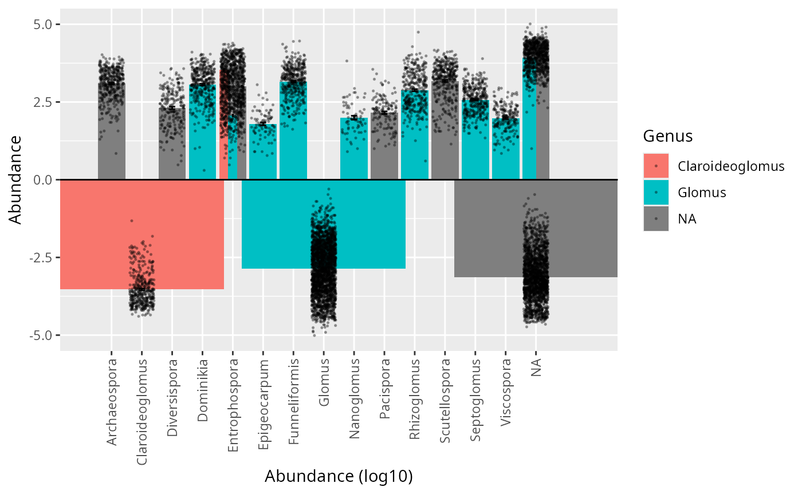

Compare two taxonomic assignments of a phyloseq in one call
Source:R/compare_taxo_db.R
compare_taxo_db.Rd
Convenience wrapper that assembles, for a single pair of tax_table columns
(typically the same rank assigned by two databases), the congruence metrics
and the four main comparison views of comparpq. It returns a named list
bundling tc_congruence_metrics(), a filtered contingency table, and the
tc_bar(), tc_sankey(), tc_heatmap() plots plus a closure that draws the
tc_circle() chord diagram on demand (the latter uses base graphics rather
than ggplot2).
Arguments
- physeq
(required) A
phyloseq::phyloseq-class()object.- rank_1
(character, required)
tax_tablecolumn of the first database (e.g."Genus_SILVA").- rank_2
(character, required)
tax_tablecolumn of the second database (e.g."Genus_KSGP").- rank_3
(character) Column used to color
tc_bar(). Defaults to the parent rank ofrank_1in the same database when it can be resolved from the column naming ("<Rank>_<Db>"), otherwiserank_1.- min_n
(integer, default 5) Minimum number of taxa for a contingency cell to be kept (cells with
n > min_nare returned).
Value
A named list with:
- congruence
result of
tc_congruence_metrics().- contingency
data.frame of cells with more than
min_ntaxa, sorted by decreasing count.- bar
a
ggplot2::ggplot()fromtc_bar().- sankey
a
ggplot2::ggplot()fromtc_sankey().- circle
a function of no argument that draws
tc_circle().- heatmap
a
ggplot2::ggplot()fromtc_heatmap().
Examples
# \donttest{
pq <- MiscMetabar::subset_taxa_pq(Glom_otu, phyloseq::taxa_sums(Glom_otu) > 5000)
#> Cleaning suppress 0 taxa ( ) and 1 sample(s) ( samp_Blanc-PCR-racines ).
#> Number of non-matching ASV 0
#> Number of matching ASV 1147
#> Number of filtered-out ASV 955
#> Number of kept ASV 192
#> Number of kept samples 443
res <- compare_taxo_db(pq, "Genus", "Genus__eukaryome_Glomero")
#> Warning: The `fun.y` argument of `stat_summary()` is deprecated as of ggplot2 3.3.0.
#> ℹ Please use the `fun` argument instead.
#> ℹ The deprecated feature was likely used in the comparpq package.
#> Please report the issue at
#> <https://github.com/adrientaudiere/comparpq/issues>.
res$contingency
#> Genus Genus__eukaryome_Glomero n
#> 39 <NA> <NA> 95
#> 38 Glomus <NA> 52
#> 12 <NA> Entrophospora 10
#> 3 <NA> Archaeospora 6
#> 10 Claroideoglomus Entrophospora 6
res$bar

# }